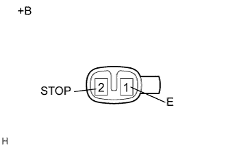

ВЕРХНИЙ СТОП-СИГНАЛ В СБОРЕ > ПРОВЕРКА |
| 1. ПРОВЕРЬТЕ ЦЕНТРАЛЬНЫЙ СТОП-СИГНАЛ В СБОРЕ |
|  |
Подайте напряжение аккумуляторной батареи на разъем и проверьте состояние светодиода.
| Условия измерений | Заданные условия |
| Положительный (+) вывод аккумуляторной батареи → контакт 2 (STOP) Отрицательный (-) вывод аккумуляторной батареи → контакт 1 (E) | Светодиод светится |
| *a | Устройство с отсоединенным жгутом проводов (центральный стоп-сигнал в сборе) |